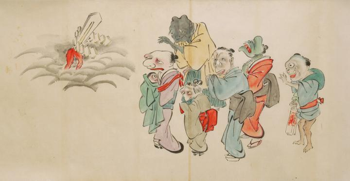

誕生した赤子の化物の宮参り。左側、黒雲の上に赤い足の生えた幣束が立っている。右側には一つ目の赤子を抱いた女の化物を先頭にした5体の化物。みな一様に幣束の化物に向かって手を合わせ拝んでいる。赤子の無事の成長を祈っているのだろう。
出典：親書誌：U426_nichibunken_0053：化物婚礼絵巻；バケモノコンレイエマキ／日付：2006／資源識別子：U426_nichibunken_0053_0023_0000
Copyright (c)2010- International Research Center for Japanese Studies, Kyoto, Japan. All rights reserved.